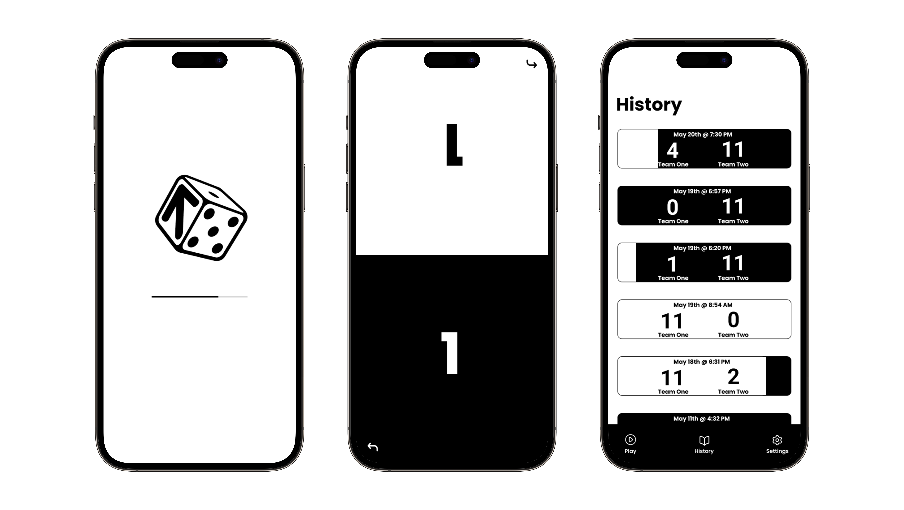

Die Up!
"Die Up!" is an app designed to elevate your experience by effortlessly tracking game scores and preserving them for future reference.
Project Type
Personal Project
Roles
UX Designer: Justin Tran
Software Engineer: Sam Golik
Tools
Figma
Illustrator
Duration
January 2024 - Ongoing